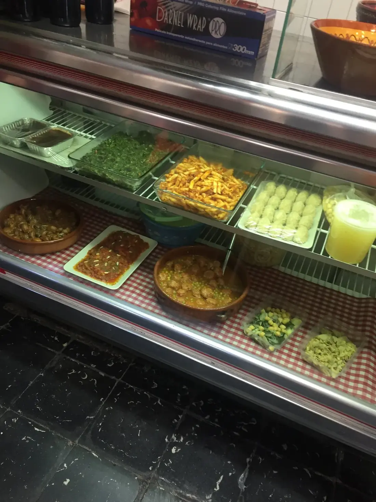
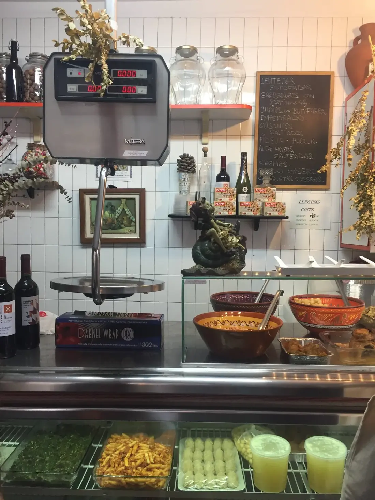

Cocina del díacomo la de casa.
Legumbres cocidas con cariño, escalivada con romesco, albóndigas con guisantes y el plato del día que toque. Producto de mercado, raciones generosas, precio honesto. Para llevarte en tarrina o comer en una de las pocas mesas del local.

Lo que se cuece esta semana.
Cocina catalana de mercado. La carta no es fija: cambia con lo que llega del proveedor. Estos son los clásicos que se repiten cuando es temporada.
Llegums cuites del dia
por pesoGarbanzos, lentejas pardinas, judías secas. Cocidas con cariño y verdura de la huerta. Se sirven por peso, mínimo 250 g.
Escalivada con romesco
5,50 €Berenjena, pimiento rojo y cebolla asados al horno. Romesco casero al lado. El pintxo más pedido del local.
Mandonguilles amb pèsols
8,50 €Albóndigas caseras con guisantes en salsa. La receta de la abuela. Para llevar en tarrina o comer al momento.
Croquetes casolanes
1,80 € udDe jamón, de pollo a l'ast o de bacalao. Bechamel hecha el día. Pedirlas calientes para llevar.
Costellar al forn
12 €Costillar de cerdo asado al horno bajito, con su jugo y patatas panadera. Se reserva por la mañana.
Pa amb tomàquet
3 €Pan de cristal tostado con tomate de la huerta, aceite y sal. Para acompañar cualquier plato.
Cocina pequeña, vitrina llena.
Diez metros cuadrados en Carrer de Santa Àgata, en el corazón de Gràcia. Detrás del mostrador, una cocina abierta donde se prepara todo cada mañana.
La Botigueta no quiere ser un restaurante. Es una tienda de comida casera para llevar, con un par de mesas para quien no quiere irse. La vitrina marca lo que hay hoy. Lo que no entra en la vitrina, mañana se cocina otra cosa.
El producto viene del Mercat de la Llibertat, a tres calles. Verdura de temporada, legumbres pesadas al peso, carne del carnicero del barrio. Sin sellos ecológicos llamativos: solo proveedores que llevan ahí toda la vida.
El bocado pequeño con romesco encima de pan de cristal está en la ruta gastronómica de Devour Barcelona. La cuchara de palo viene con la cuchara de palo: no hay vajilla bonita ni jugamos a ser sitio cool. Aquí se viene a comer.

Tres pasos. Sin misterio.
Miras la vitrina
El menú es lo que ves. Si una bandeja está vacía, ese plato se acabó. Mañana habrá otro. Si lo prefieres por adelantado, llama por la mañana y te lo guardamos.
Pesas y eliges
Tarrinas medianas o grandes. Cada plato se cobra por peso real, no por ración fija. Pides la cantidad que necesites para una o cuatro personas.
Llevas o comes
Hay un par de mesas para quien quiere comerlo allí. La mayoría se lo lleva a casa, al parque del Putxet o a la oficina. Tarrina cerrada caliente, aguanta una hora.
Carrer de Santa Àgata, 18
- Lunes12:00 – 16:00 · 19:00 – 21:00
- Martes12:00 – 16:00 · 19:00 – 21:00
- MiércolesCerrado
- Jueves12:00 – 16:00 · 19:00 – 21:00
- Viernes12:00 – 16:00 · 19:00 – 21:00
- Sábado14:00 – 16:00
- DomingoCerrado
08012 Barcelona · Vila de Gràcia · 4 min andando del Mercat de la Llibertat